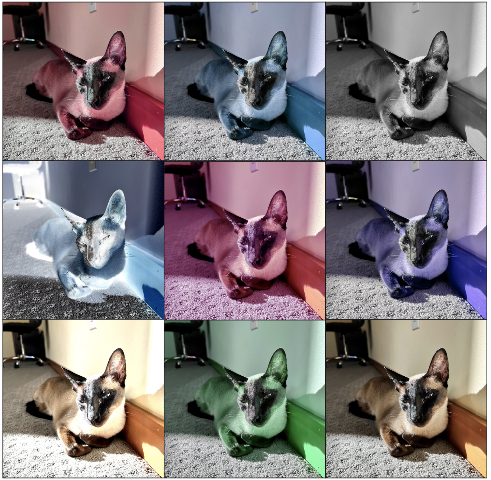

Funky photoshop project in the style of Andy Warhol. It's just based off a photo of my cat that I took. Nothing too wild, but good practice for importing PSDs into InDesign. Even though I've used Photoshop for years, I think this was my first time messing with the color filters. Apparently I must have never had a use for them before.